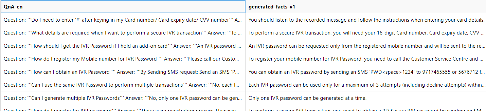

import faiss
import numpy as np
def setup_faiss_index(language: str = 'en'):
"""
Set up FAISS index for a specific language.
Args:
language: Language code to use for the index
"""
embedding_col = f'QnA_{language}_embedding'
# Convert embeddings to numpy array
embeddings = np.stack(df[embedding_col].values)
# Initialize FAISS index
dimension = embeddings.shape[1] # Should be 1024
# Set up FAISS index if not already done
if not hasattr('faiss_index'):
faiss_index = faiss.IndexFlatL2(dimension)
faiss_index.add(embeddings.astype('float32'))
# example usage
faiss_index.search(query_embedding, top_k)0. Introduction
Evaluating RAG is an unsupervised machine learning problem. Labelling such data manually would be astromical work.
Popular evaluation solutions:
- Huggingface synthetic QAs - Generate QAs and have a judge llm pipeline return accuracy.
- Pinecone different metrices - Different ways to measure positional document retrieval precision
- OpenAI cookbook using llamaindex - Use llamaindex built in evaluations such as generate_question_context_pairs and RetrieverEvaluator.from_metric_names.
These are all great evaluations. In this notebook, I’m going to focus on the quality of final generated response.
1. Proposed solution. True/False evaluation
- Fact Extraction: Derive factual statements from documents, where each fact constitutes a single sentence that accurately reflects the context.
- Query Formulation: Craft queries based on extracted facts, framing them as true or false questions. Example: “Is the following sentence true? {generated_fact_x}. Please respond with ‘True’ or ‘False’ only, without justification.”
- Response Analysis: Tabulate the frequency of “True” responses from the Large Language Model (LLM).
This approach leverages the strengths of state-of-the-art LLMs in rephrasing knowledge, while offering two key benefits:
- Quantifiable Accuracy: Easy to calculate accuracy (count number of True vs False)
- Efficient Validation: Easy for manual validation.
1.1 Experiment design
To test true/false evaluation, let us create an experiment. Here is a simple RAG question that needs an evaluation to answer.
Question - “Suppose we have english text documents and multilingual embedding model. Note that”Hello, my name is Tony”’s embedding is different from “Bonjour, je m’appelle tony”’s embedding. -> Would having duplicates of documents in different languages increase vector search accuracy?”
In this notebook we will answer this question using True/False evaluation method.
| Cohere-embed-v3-multilingual embedding model output of “Hello my name is Tony” in English versus French |
2. Data
To experiment this idea, I am going to use the following data - FAQ_bank.csv has 1764 rows of ‘Question’ and ‘Answer’ string data. For this experiment, ‘category’ was ignored
 |
|---|
| FAQ_bank.csv |
3. Preprocess the data
3.1 Combine Question & Answer and then translate documents.
Here, ‘Question’ and ‘Answer’ merged and translated into ‘fr’, ‘en’, ‘ar’, ‘zh-Hant’, ‘ko’, ‘hi’, ‘es’, ‘ru’ languages.
| Note that Azure Translator resource was used |
3.2 Generate True statements.
Here, english QnA was prompted to an llm to generate a fact or facts. Some QnA were large enough to generate multiple facts so dynamic number was chosen depending on length of a QnA. For example, if QnA had over 2000 characters, 4 facts were generated, if less than 1000 characters, only one fact was generated.
2865 facts were gnerated from 1764 QnAs.
|  |
|---|
Prompt: "From the following context, create "+ str(n) +" many truthful facts in bullet point forms. For example: 1. Telus is a Canadian company.\n2. Toronto is city of Ontraio, Canada.\nContext:".format(context) |
Where n=number of fact to generate, context=QnA in English |
Note that Azure GPT4o was used with temperature=0.1 |
3.3 Generate embeddings.
Here, all QnA’s in 8 different languages including English is vectorized.
3.4 Vector Store
Here, we use faiss vector database to store raw text and its embedding. Faiss vector db supports k-means clustering, proximity graph-based methods and most importantly similarity search for our RAG.
There are tons of other vector databases available such as Redis, Pinecone, Postgresql, etc. Therefore, TODO
4. Evaluation
Following prompt was used to evaluate RAG. Using Azure GPT4o with temperature=0.1
prompt = f"""
Is the following statement true?
Statement: ```{query}```
Answer only in True or False. Do not explain.
Use the following ground truth documents of Questions and Answers.
Documents:
```
{combined_context}
```
"""Where query = generated facts from step 3.2 in English and combined_context=returned documents from vector similarity search.
4.1 Evaluate using ONLY ENGLISH Embedding (temperature=0.1)
| True | False | Accuracy |
|---|---|---|
| 2571 | 286 | 89.99% |
4.2 Evaluate using ALL 8 LANGUAGES Embedding (temperature=0.1)
| True | False | Accuracy |
|---|---|---|
| 2584 | 273 | 90.45% |
4.3 Evaluate using ONLY ENGLISH Embedding (temperature=0)
| True | False | Accuracy |
|---|---|---|
| 2857 | 0 | 100% |
4.4 Evaluate using ALL 8 LANGUAGES Embedding (temperature=0)
| True | False | Accuracy |
|---|---|---|
| 2857 | 0 | 100% |
4.5 Analyzing wrong answers
ID: id of documentQnA_english: original Q&A in EnglishStatement: generated test questioneng_ans: RAG output using English embedding vector store onlymultilang_ans: RAG output using 8 language embedding vector storestop_k_docs_idx: RAG top 5 document in order of highest similarity score. Note that the same number indicates same document in different languages. For example,[43,1764,4,43,43]indicates that document index 43 was returned three times in three different langauge embeddings.
| ID | QnA_english | Statement | eng_ans | multilang_ans | top_k_docs_idx |
|---|---|---|---|---|---|
| 43 | Question:In what transactions is the One Time Password (IVR Password ) process applicable:The IVR Password process is applicable only for Credit Cards for: Registration through HDFC Bank website Registration during online shopping Password re-set through website Password re-set while shopping online View more |
The IVR Password process is applicable only for Credit Cards for registration through the HDFC Bank website. | False | True | [43, 1764, 4, 43, 43] |
| 96 | Question:What are the tenure options available:The choice is yours. You can choose any repayment option from 12 to 84 months all specially designed to suit your requirements. |
The available tenure options for repayment range from 12 to 84 months. | False | False | [96, 641, 68, 327, 121] |
| 168 | Question:What is the minimum loan value/product value:We are funding products with loan value above Rs 40000 |
The minimum loan value for funding products is Rs 40,000. | False | False | [168, 304, 168, 168, 168] |
| 215 | Question:How long is the tenure of the loan (Education Loans For Indian Education):The maximum tenure of the loan can be 7 years, including the Moratorium period. |
The maximum tenure of an education loan for Indian education can be 7 years, including the Moratorium period. | False | False | [215, 187, 2141, 215, 215] |
| … | … | … | … | … | … |
- 9 out of 2866 failed to generate fact from step 3.2. (Azure OpenAI API call issue)
- In total, 315 rows out of 2857 had at least one False from both methods
- In total, 244 rows out of 2857 had False from both methods
- In total, 71 rows out of 2857 had False from one method but not the other
It looks like there is no problem in RAG vector search as the original document in which was used to generate question was correctly returned at the top of similarity search.
(Update) The llm generation was intentionally outputting false because the temperature was set to 0.1, explained by 1-0.1 = 0.9 accuracies we have seen in the evaluation.
To understand this, because I’ve asked llm to output only True or False, its top 2 probable response if going to look like True - 99%, False - 50%, IDK - 10%, etc. If temperature is set to zero, llm would always choose most probable option, True - 99%. If temperature is set above 0, it would sometimes pick second or worse best option, False - 50%.
Here we learn that - Given perfectly chunked documents, both English and 8 languages embedding was able to give 100% accurate response
5. Conclusion
Using all 8 embeddings in 8 different language performed better than 1 embedding for English! But at scale, it may not be a very effective way to improve the accuracy.
6. TLDR
True/false evaluation showed that method A (having duplicate documents in different languages) had better accuracy than method B (having just original document in English) by 0.46%.(tiny)
7. BONUS
There are many variations to experiment
- Try differnt embedding models, translation models, large language models.
- Try different vector stores, similarity metrices (top k), chunking strategies
- Try different prompts, agentic workflow
- Try different dataset
- Try different metrices. Generate False statements for recall and precision